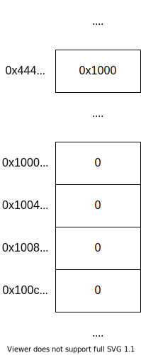
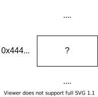
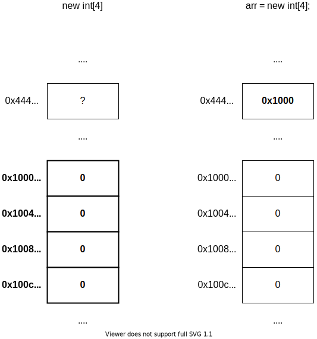
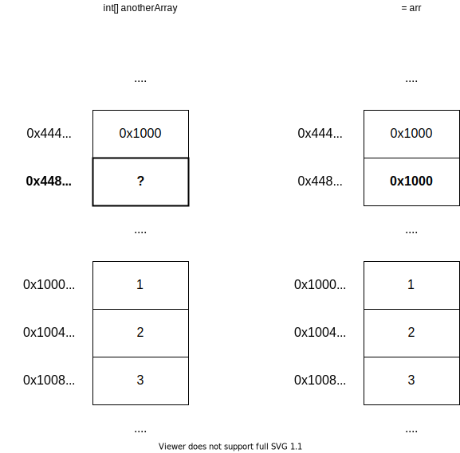
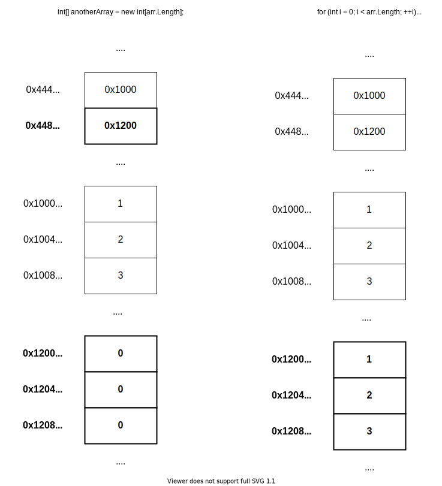

Mục lục
Ngôn ngữ lập trình C#
Ngôn ngữ lập trình được dùng để viết chương trình cho con người có thể đọc.
C# là ngôn ngữ lập trình bậc cao, tức là code của nó gần với con người hơn, dễ đọc hiểu hơn. Bậc ở đây không phải chỉ độ mạnh yếu mà là chỉ mức trừu tượng.
- Ở mức mã máy (thấp nhất) thì chương trình chỉ là một chuỗi bit.
- Với hợp ngữ (assembly) thì chương trình là một dãy các chỉ thị cực kỳ đơn giản như cộng, trừ, nhân chia, chép giá trị từ chỗ này sang chỗ khác, nhảy đến một địa chỉ và tiếp tục chạy chương trình từ chỗ đó, …
- Những ngôn ngữ lập trình như C hay Pascal thì bắt đầu có các hàm, các kiểu
dữ liệu, các câu lệnh rẽ nhánh, câu lệnh lặp, … Nhờ mấy cái này mà chương
trình có thể trở nên gần giống với câu văn trong ngôn ngữ tự nhiên, ví dụ như
if answer = correctAnswer then increaseScore. - Vấn đề đọc hiểu đã được giải quyết phần nào nhờ mấy cái tính năng của ngôn ngữ
lập trình thời trước như C hay Pascal, nhưng mà mấy cái ngôn ngữ đó quá đơn giản,
với lại nhiều thứ không có sẵn, nên là có những ngôn ngữ mới hơn ra đời, C# là một
trong số đó. Mấy ngôn ngữ này phức tạp hơn (tại vì có nhiều tính năng hơn), bù lại
là chương trình viết ra sẽ càng gần với ngôn ngữ tự nhiên hơn, ví dụ như bên C# có
thể viết
foreach (var item in theList), bỏ qua chữvarthì nó chính là một câu tiếng Anh (không hoàn chỉnh nhưng) đúng ngữ pháp: for each item in the list (với mỗi mục trong danh sách).
Máy tính không trực tiếp thực thi chương trình viết bằng C#, để chạy được cần phải biên dịch (compile) ra dạng mà máy có thể thực thi được. Nếu code không đúng cú pháp thì lúc biên dịch sẽ gặp lỗi, kêu là lỗi biên dịch (compile error). Nếu chương trình không có lỗi biên dịch nhưng mà tới lúc chạy gặp lỗi thì lỗi đó kêu là lỗi thực thi (runtime error, chữ runtime tách ra để đọc hiểu, run là chạy, time là thời điểm, ghép lại là lỗi lúc chạy).
Hello world
Dưới này là chương trình Hello world viết bằng C#
using System;
namespace Application
{
class Program
{
/* Chương trình bắt đầu chạy từ đây */
static void Main()
{
// In ra dòng chữ "Hello world"
Console.WriteLine("Hello world");
Console.WriteLine("This program is written in C#");
}
}
}
Tạm bỏ qua dòng using và namespace (sẽ nói cụ thể ở phần Namespace).
Chương trình trong C# luôn được viết trong một lớp (class, phần này cũng sẽ được nói sau).
static void Main() là dòng khai báo một phương thức (method) tĩnh (static) có tên là Main.
Phương thức đặt tên gì cũng được, nhưng mà chương trình luôn bắt đầu chạy từ Main() nên thiếu
nó là không chạy được.
Các câu lệnh sẽ được thực thi theo hướng từ trên xuống.
Phần viết bên trong /* */ hoặc từ // đến hết dòng là chú thích (comment),
sẽ bị bỏ qua khi chạy chương trình. Chú thích dùng để viết cho con người đọc,
thường xài để giải thích lý do. Chú thích viết bằng /* */ không lồng nhau.
Các dòng Console.WriteLine trong Main() gọi là câu lệnh. Câu lệnh được dùng
để mô tả một hành động nào đó, ở đây hành động được mô tả là in ra màn hình. Câu
lệnh kết thúc bằng dấu chấm phẩy ;
Console là một lớp có sẵn trong thư viện chuẩn của C#, dùng cho nhập xuất cơ bản
trên giao diện dòng lệnh (mấy cái như cmd hoặc PowerShell của Windows).
WriteLine là một phương thức của lớp Console, xài để in giá trị ra màn hình, sau
khi in xong sẽ in kèm ký tự xuống dòng.
Phần viết bên trong cặp " gọi là chuỗi (string). Cặp dấu " dùng để đánh dấu vị trí
bắt đầu và kết thúc của chuỗi, "abc" là chuỗi chứa 3 ký tự a, b và c, cặp dấu "
chỉ là để đánh dấu vị trí bắt đầu và kết thúc, không phải nội dung của chuỗi.
Câu lệnh, giá trị, phép toán
Câu lệnh để thể hiện một hành động nào đó có tạo ra ảnh hưởng. Ảnh hưởng ở đây có thể là giá trị trên bộ nhớ được sửa đổi, dữ liệu được gửi đi (ví dụ câu lệnh in ra màn hình) hoặc nhận về, …
Giá trị có thể là những thứ đơn giản như 1 (số nguyên), 3.14 (số thực), "abc"
(chuỗi), cũng có thể là kết quả của phép tính phức tạp, ví dụ 1 + 2 * 3.14 / (3 - 4).
Mấy cái như cộng, trừ, nhân, chia gọi chung là phép toán hoặc toán tử (operator).
C# xài ký tự +, -, *, / cho 4 phép toán này, ngoài ra có thêm % cho phép
chia lấy phần dư. Giá trị tham gia vào phép toán được gọi là toán hạng (operand).
Ví dụ như 1 + 2 thì + là toán tử còn 1 với 2 là toán hạng.
Kiểu dữ liệu, biến
Mọi giá trị trong C# đều có kiểu dữ liệu (data type) của nó. Kiểu dữ liệu nó là một
tập hợp các giá trị và các phép toán cho mấy cái giá trị đó. Ví dụ như kiểu byte
(một kiểu số nguyên không âm trong C#) là tập hợp chứa các số từ 0 tới 255, biến
biến thuộc kiểu này có thể chứa số bất kỳ từ 0 tới 255. Kiểu byte cũng có các
phép toán như cộng, trừ, nhân, chia nên nếu có 2 giá trị thuộc kiểu byte có thể cộng
2 giá trị đó để cho ra giá trị mới.
C# có các kiểu dữ liệu cơ bản này:
- Số nguyên: Được phân ra làm số nguyên có dấu (signed, tức là có thể chứa giá trị âm)
và số nguyên không dấu (không thể chứa giá trị âm). Kiểu số nguyên chủ yếu được dùng là
kiểu
int, các kiểu khác có thể xem ở https://docs.microsoft.com/en-us/dotnet/csharp/language-reference/builtin-types/integral-numeric-types - Số thực: Tất cả các kiểu số thực đều là số có dấu (tức là có thể chứa số âm), thường
chỉ dùng
floathoặcdouble. Xem chi tiết ở https://docs.microsoft.com/en-us/dotnet/csharp/language-reference/builtin-types/floating-point-numeric-types - Boolean: Tên trong C# là
bool. Kiểu này chỉ có 2 giá trị làtruevàfalse. - Ký tự: Tên kiểu trong C# là
char, dùng để chứa một ký tự Unicode (câu này không hoàn toàn đúng, nhưng mà nếu giải thích rõ ra thì hơi dài nên cứ coi như nó đúng đi). - Chuỗi: Tên kiểu là string, dùng để chứa 0 hoặc nhiều ký tự.
Biến (variable) là một vùng trên bộ nhớ được đặt tên, xài để chứa giá trị thuộc một kiểu nào đó được xác định trước, giá trị của cái vùng nhớ đó có thể thay đổi (cho nên nó mới được gọi là biến, chữ biến trong biến đổi ấy). Tên biến là để con người đọc thôi chứ máy nó không quan tâm, nên là chọn tên sao cho có ý nghĩa tí.
Khai báo biến theo cú pháp <kiểu> <tên>; với <kiểu> là tên kiểu dữ liệu, <tên> là
tên biến.
int paymentPerHour; // Biến kiểu số nguyên có dấu, tên là paymentPerHour
int hoursWorked;
Lần đầu tiên gán giá trị cho biến được gọi là khởi tạo. Có thể khởi tạo ngay sau khi khai báo biến luôn:
int paymentPerHour = 20000;
int hoursWorked = 80;
Có thể sử dụng biến với các phép toán mà kiểu của nó có (ví dụ số nguyên có phép toán cộng, trừ, nhân, chia, chia dư, …)
int paymentPerHour = 20000;
int hoursWorked = 80;
// Biến paymentPerHour và hoursWorked thuộc kiểu số nguyên nên có thể nhân
int wage = paymentPerHour * hoursWorked;
Nhập xuất với Console
In ra màn hình bằng Console.Write() hoặc Console.WriteLine().
Write chỉ in giá trị được truyền vào rồi thôi, còn WriteLine sau khi
in giá trị xong sẽ in thêm 1 ký tự xuống dòng.
Viết giá trị muốn in vào trong cặp ngoặc tròn, mỗi lần chỉ được in 1 giá trị. Muốn in nhiều giá trị thì viết nhiều câu lệnh, mỗi lần truyền 1 giá trị.
// Đoạn chương trình trên in ra `Helloworld` (không có khoảng trắng ở giữa).
// `Console.Write()` chỉ in cái được truyền vào, không in thêm gì khác.
// Sau `world` có ký tự xuống dòng do `Console.WriteLine()` in kèm.
Console.Write("Hello");
Console.WriteLine("world");
Đọc 1 dòng từ bàn phím bằng Console.ReadLine(), kết quả được đưa về
dưới dạng chuỗi.
Để chuyển chuỗi đọc được sang kiểu khác, có thể dùng lớp Convert,
lớp này có các phương thức như ToInt32() để chuyển sang kiểu int,
ToDouble() để sang kiểu double
string name = Console.ReadLine();
int age = Convert.ToInt32(Console.ReadLine());
double weightInKg = Convert.ToDouble(Console.ReadLine());
Lưu ý là đoạn code trên chỉ đọc vào chứ không in ra, nên lúc chạy sẽ thấy như chương trình không phản hồi người dùng. Để người dùng biết cần nhập gì, cần in thông báo ra trước:
Console.Write("Your name: ");
string name = Console.ReadLine();
Console.Write("Your age: ");
int age = Convert.ToInt32(Console.ReadLine());
Console.Write("Your weight in kg: ");
double weightInKg = Convert.ToDouble(Console.ReadLine());
Console.WriteLine("Here is what you entered:");
Console.Write(" Name: ");
Console.WriteLine(name);
Console.Write(" Age: ");
Console.WriteLine(age);
Console.Write(" Weight: ");
Console.Write(weightInKg);
Console.WriteLine(" kg");
In từng giá trị như trên sẽ rất phiền phức, nên Console có cho phép dùng
Write và WriteLine theo một cách khác ngắn gọn hơn:
Console.Write("Your name: ");
string name = Console.ReadLine();
Console.Write("Your age: ");
int age = Convert.ToInt32(Console.ReadLine());
Console.Write("Your weight in kg: ");
double weightInKg = Convert.ToDouble(Console.ReadLine());
Console.WriteLine("Here is what you entered:");
Console.WriteLine(" Name: {0}", name);
Console.WriteLine(" Age: {0}", age);
Console.WriteLine(" Weight: {0} kg", weightInKg);
Chuỗi đầu tiên được gọi là chuỗi định dạng (format string), tức là chuỗi dùng để
mô tả kết quả sau khi in sẽ ra cái gì. Phía sau có thể truyền bao nhiêu giá trị
cũng được, giá trị đầu tiên có số thứ tự là 0 và sẽ được dùng để thế vào {0}
trong chuỗi định dạng. Một giá trị có thể dùng nhiều lần trong chuỗi định dạng:
Console.WriteLine("{0}{1}{0}", 'a', 'b'); // In ra "aba"
Mảng
Biến thuộc các kiểu dữ liệu ở phía trước chỉ lưu một giá trị. Khi cần lưu nhiều giá trị thì không thể cứ khai báo biến cho từng giá trị được, lúc này cần dùng tới mảng (array).
Kiểu mảng là kiểu có thể chứa nhiều giá trị cùng kiểu dữ liệu. Kích thước của mảng là cố định khi nó được tạo ra. Các giá trị bên trong mảng gọi là phần tử (element).
Tên kiểu mảng có dạng T[] với T là tên của kiểu phần tử, ví dụ:
int[] là kiểu mảng với các phần tử là số nguyên.
Không giống với những kiểu đơn giản như int hay float, biến kiểu mảng
không trực tiếp chứa dữ liệu, dữ liệu được lưu ở chỗ khác trên bộ nhớ.
Biến thuộc kiểu mảng chỉ chứa địa chỉ của nơi lưu các phần tử mảng mà thôi.

Nhìn hình bên trên có thể thấy, các phần tử của mảng được lưu ở địa chỉ từ
0x1000 về sau còn biến arr lại nằm ở địa chỉ 0x444.
Để sử dụng mảng, trước hết cần khai báo một biến kiểu mảng để chỉ tới vùng lưu giá trị các phần tử.
int[] arr;

Sau đó là tạo mảng mới bằng toán tử new, lúc này bộ nhớ sẽ được cấp cho
chương trình để lưu các phần tử của mảng, cho nên trong cặp ngoặc vuông cần
phải có kích thước cụ thể của mảng.
int[] arr;
// Cấp phát 1 vùng nhớ đủ chứa 4 phần tử kiểu int và cho `arr` trỏ đến
arr = new int[4];

Có thể kết hợp 2 bước khai báo và khởi tạo lại
int[] arr = new int[4];
Đọc/ghi giá trị từng phần tử trong mảng bằng toán tử [], trong cặp ngoặc vuông
ghi chỉ số (index) của phần tử cần truy cập, phần tử đầu của mảng có chỉ số là 0.
int[] arr = new int[4];
arr[0] = 123;
arr[1] = 456;
arr[2] = 789;
arr[3] = 0;
Console.WriteLine("{0} {1} {2} {3}", arr[0], arr[1], arr[2], arr[3]);
Khi dùng new, các phần tử của mảng đều được khởi tạo bằng giá trị
mặc định của kiểu, đối với kiểu số thì giá trị mặc định là 0, kiểu
bool là false, kiểu đối tượng là null, … Vậy cho nên dòng
arr[3] = 0 bên trên có thể loại bỏ mà không làm thay đổi ý nghĩa
của chương trình.
int[] arr = new int[4];
arr[0] = 123;
arr[1] = 456;
arr[2] = 789;
Console.WriteLine("{0} {1} {2} {3}", arr[0], arr[1], arr[2], arr[3]);
Có thể khởi tạo giá trị các phần tử ngay khi cấp phát bộ nhớ bằng new
int[] arr = new int[4] { 123, 456, 789, 0 };
Console.WriteLine("{0} {1} {2} {3}", arr[0], arr[1], arr[2], arr[3]);
Nếu trong cặp ngoặc nhọn có đủ giá trị cho tất cả các phần tử đều thì có thể bỏ trống kích thước mảng, trình biên dịch nó tự biết đếm số phần tử trong cặp ngoặc nhọn.
// arr vẫn là mảng 4 phần tử
int[] arr = new int[] { 123, 456, 789, 0 };
Console.WriteLine("{0} {1} {2} {3}", arr[0], arr[1], arr[2], arr[3]);
new int[] { 123, 456, 789, 0 } tạo một mảng và khởi tạo cho các phần tử
của nó bằng những giá trị được ghi trong cặp ngoặc nhọn.
Nếu khởi tạo giá trị các phần tử của mảng ngay khi khai báo biến kiểu mảng thì
có thể bỏ qua new luôn
int[] arr = { 123, 456, 789, 0 };
Console.WriteLine("{0} {1} {2} {3}", arr[0], arr[1], arr[2], arr[3]);
Trong trường hợp biến đã được khai báo trước đó thì không bỏ new được
int[] arr;
// Nếu viết như dòng này sẽ bị lỗi biên dịch
// arr = { 123, 456, 789, 0 };
arr = new int[] { 123, 456, 789, 0 };
Console.WriteLine("{0} {1} {2} {3}", arr[0], arr[1], arr[2], arr[3]);
Lưu ý là trong trường hợp không khởi tạo tất cả phần tử trong mảng thì không thể bỏ qua kích thước mảng, nếu không sẽ làm thay đổi ý nghĩa chương trình.
int[] arr1 = new int[4] { 1, 2, 3 }; // Mảng 4 phần tử 1, 2, 3, 0
int[] arr2 = new int[] { 1, 2, 3 }; // Mảng 3 phần tử 1, 2, 3
int[] arr3 = { 1, 2, 3 }; // Như trên, mảng 3 phần tử 1, 2, 3
Kích thước của mảng (số phần tử) được lưu trong thuộc tính (property) Length.
int[] arr = new int[4];
Console.WriteLine("Length of arr = {0}", arr.Length);
Có thể dùng foreach để duyệt qua từng phần tử trong mảng, hoặc dùng for với
biến lặp duyệt qua từng chỉ số (index) của mảng, sau đó dùng biến lặp (đang chứa
chỉ số phần tử mảng) để truy cập phần tử trong mảng.
int[] arr = { 1, 2, 3 };
// Duyệt qua mảng bằng vòng lặp for, chỉ số của
// phần tử hiện tại được lưu trong biến i
for (int i = 0; i < arr.Length; ++i)
{
Console.WriteLine(arr[i]);
}
// Duyệt qua mảng bằng vòng lặp foreach, không có
// chỉ số của phần tử hiện tại không được lưu
foreach (int value in arr)
{
Console.WriteLine(value);
}
foreach sẽ lần lượt lấy từng giá trị trong mảng gán cho biến tạm rồi
thực thi đoạn code trong thân vòng lặp.
int[] arr = { 1, 2, 3 };
/*
Vòng lặp foreach bên dưới tương tự với đoạn code này:
int value;
value = arr[0];
Console.WriteLine(value);
value = arr[1];
Console.WriteLine(value);
value = arr[2];
Console.WriteLine(value);
value = arr[3];
Console.WriteLine(value);
*/
foreach (int value in arr)
{
Console.WriteLine(value);
}
Biến kiểu mảng chỉ chứa địa chỉ của nơi lưu các phần tử trên bộ nhớ, cho nên không thể sao chép mảng bằng phép gán.
int[] arr = { 1, 2, 3 };
int[] anotherArray = arr;
arr[0] = 0;
Console.WriteLine(anotherArray[0]); // In ra 0 chứ không phải 1

Để chép nội dung mảng cần tạo mảng mới trước rồi chép giá trị từng phần tử sang.
int[] arr = { 1, 2, 3 };
int[] anotherArray = new int[arr.Length];
// Đây là một trường hợp không thể dùng foreach, tại vì
// mình cần sử dụng giá trị của chỉ số hiện tại.
foreach (int i = 0; i < arr.Length; ++i) {
anotherArray[i] = arr[i];
}
arr[0] = 0;
Console.WriteLine(anotherArray[0]); // Lúc này in ra 1

Bởi vì việc sao chép nội dung mảng rất thường gặp nên C# có cung cấp sẵn
phương thức cho việc sao chép trong lớp Array (một lớp chứa các phương
thức giúp thao tác với mảng tiện lợi hơn).
int[] arr = { 1, 2, 3 };
int[] anotherArray = new int[arr.Length];
// Mảng nguồn, mảng đích, số phần tử cần chép
Array.Copy(arr, anotherArray, arr.Length);
foreach (int value in anotherArray)
{
Console.WriteLine(value);
}
Lớp
Chỉ sử dụng các kiểu cơ bản như int, float, char, bool không đủ để
viết ra code dễ đọc. Lấy ví dụ như đoạn chương trình nhập 2 điểm và in ra
khoảng cách giữa 2 điểm vừa nhập
Console.WriteLine("Nhập tọa độ điểm thứ nhất: ");
double x1 = Convert.ToDouble(Console.ReadLine());
double y1 = Convert.ToDouble(Console.ReadLine());
Console.WriteLine("Nhập tọa độ điểm thứ hai: ");
double x2 = Convert.ToDouble(Console.ReadLine());
double y2 = Convert.ToDouble(Console.ReadLine());
double distance = Math.Sqrt(Math.Pow(x2 - x1, 2) + Math.Pow(y2 - y1, 2));
Console.WriteLine("Khoảng cách giữa 2 điểm vừa nhập là {0}", distance);
Ở đoạn code trên, mỗi khi cần lưu 1 điểm cần khai báo 2 biến. Bởi vì phải khai báo nhiều biến hơn nên tên được dùng cho biến cũng trở nên xấu xí khó đọc hơn. Thêm nữa là phần tính toán khoảng cách bị lẫn vào trong code làm cho nó không thể được sử dụng lại ở nơi khác (trừ khi copy-paste code).
Theo OOP, chương trình được mô tả theo các đối tượng (object). Đối tượng có được tạo ra theo một hình mẫu cụ thể, gọi là lớp (class). Đối tượng có các phương thức (method) để mô tả hành động, thuộc tính (property) để mô tả những dữ liệu được công khai, và trường (field) cho những dữ liệu mà đối tượng không cần công khai.
Khai báo lớp, trường, phương thức
Để sử dụng đối tượng cần khai báo lớp, sử dụng từ khóa class
class Point
{
}
Trong class có thể có trường (field), cách khai báo giống với khai báo biến.
class Point
{
double x;
double y;
}
Trong class cũng có thể có phương thức (method), khai báo theo cú pháp
<kiểu trả về> <tên>(<các tham số>).
class Point
{
double x;
double y;
double Distance(Point other)
{
return Math.Sqrt(Math.Pow(x - other.x, 2), Math.Pow(y - other.y, 2));
}
}
Tạo object bằng new
using System;
namespace Application
{
class Point
{
double x;
double y;
double Distance(Point other)
{
return Math.Sqrt(Math.Pow(x - other.x, 2), Math.Pow(y - other.y, 2));
}
}
class Program
{
static Point ReadFromConsole(string message)
{
Console.WriteLine(message);
Point pt = new Point(); // Tạo đối tượng thuộc kiểu Point
Console.Write("Nhập x: ");
pt.x = Convert.ToDouble(Console.ReadLine());
Console.Write("Nhập y: ");
pt.y = Convert.ToDouble(Console.ReadLine());
return pt;
}
static void Main()
{
Point firstPoint = ReadFromConsole("Nhập thông tin điểm thứ nhất:");
Point secondPoint = ReadFromConsole("Nhập thông tin điểm thứ hai:");
Console.WriteLine("Khoảng cách giữa 2 điểm vừa nhập là {0}",
firstPoint.Distance(secondPoint));
}
}
}
Để tính khoảng cách của 2 điểm cần làm 3 việc:
- Đọc vào điểm thứ nhất
- Đọc vào điểm thứ hai
- Tính và in ra khoảng cách
Chương trình lúc này dài hơn chương trình ban đầu, nhưng phần xử lý việc nhập 2 điểm và tính khoảng cách trở thành
Point firstPoint = ReadFromConsole("Nhập thông tin điểm thứ nhất:");
Point secondPoint = ReadFromConsole("Nhập thông tin điểm thứ hai:");
Console.WriteLine("Khoảng cách giữa 2 điểm vừa nhập là {0}",
firstPoint.Distance(secondPoint));
Nếu để ý kỹ sẽ thấy mỗi câu lệnh bên trên tương ứng với một hành động được mô tả bằng lời trước đó.
Giới hạn quyền truy cập
Các thành viên của một lớp có thể được khai báo 1 trong 3 mức truy cập
public, protected, private. Khai báo public sẽ cho phép truy cập
thành viên đó ở bất cứ đâu. Ngược lại, khai báo private sẽ chỉ cho phép
truy cập trong chính lớp đó. Từ khóa này được thêm trước kiểu dữ liệu.
Thông thường trường (field) sẽ được khai báo private, còn thuộc tính (property)
và phương thức (method) thì được khai báo public. Nếu một phương thức chỉ được
dùng bên trong lớp thì có thể khai báo private.
using System;
namespace Application
{
class Point
{
private double x;
private double y;
public double Distance(Point other)
{
// Ở đây vẫn đang trong class Point nên có thể truy cập x và y của Point
return Math.Sqrt(Math.Pow(x - other.x, 2), Math.Pow(y - other.y, 2));
}
}
class Program
{
// Phương thức này chỉ được dùng trong lớp Program
// nên có thể khai báo private
private static Point ReadFromConsole(string message)
{
Console.WriteLine(message);
Point pt = new Point();
Console.Write("Nhập x: ");
// Lỗi: x được khai báo private
pt.x = Convert.ToDouble(Console.ReadLine());
Console.Write("Nhập y: ");
// Lỗi: y được khai báo private
pt.y = Convert.ToDouble(Console.ReadLine());
return pt;
}
static void Main()
{
Point firstPoint = ReadFromConsole("Nhập thông tin điểm thứ nhất:");
Point secondPoint = ReadFromConsole("Nhập thông tin điểm thứ hai:");
Console.WriteLine("Khoảng cách giữa 2 điểm vừa nhập là {0}",
firstPoint.Distance(secondPoint));
}
}
}
Thuộc tính
Đoạn code ở phần trước sẽ gây ra lỗi biên dịch. Ngoại trừ tham gia vào tính toán
bên trong lớp, x và y cũng cần cho bên ngoài truy cập để lớp này có ích.
Trong trường hợp này C# cung cấp một tính năng khác phù hợp hơn trường (field),
đó là thuộc tính (property). Thuộc tính có thể được sử dụng tương tự như trường,
nhưng có thể định nghĩa getter (phương thức được dùng khi property được đọc)
và setter (phương thức được dùng khi property được ghi).
using System;
namespace Application
{
class Integer
{
public int value; // public field
// public property với getter và setter mặc định.
// Cái này không khác gì public field
public int Value
{
get;
set;
}
// public property với getter tự định nghĩa, không có setter
public int One
{
get { return 1; }
}
private int _nonnegativeValue;
// public property với setter tự định nghĩa
// Thường thì tự định nghĩa setter cần một private field để
// lưu giá trị của nó, đồng thời cũng cần phải định nghĩa
// getter để lấy giá trị đó ra
public int NonnegativeValue
{
get
{
return _nonnegativeValue;
}
set
{
// `value` là giá trị nằm bên phải dấu = trong phép gán
if (value < 0)
{
_nonnegativeValue = 0;
}
else
{
_nonnegativeValue = value;
}
}
}
static void Main()
{
Integer i = new Integer();
i.value = -1; // Sửa giá trị của trường (field) value
i.Value = -1; // Sửa giá trị của thuộc tính (property) Value
// Dòng này sẽ gây ra lỗi biên dịch, thuộc tính này
// không có setter nên không thể sửa giá trị của nó.
// i.One = 2;
i.NonnegativeValue = -123;
Console.WriteLine(i.NonnegativeValue); // In ra 0
i.NonnegativeValue = 123;
Console.WriteLine(i.NonnegativeValue); // In ra 123
}
}
}
Sử dụng thuộc tính, đoạn code trên có thể sửa thành
using System;
namespace Application
{
class Point
{
public double X {
get;
set;
}
public double Y
{
get;
set;
}
public double Distance(Point other)
{
return Math.Sqrt(Math.Pow(X - other.X, 2), Math.Pow(Y - other.Y, 2));
}
}
class Program
{
private static Point ReadFromConsole(string message)
{
Console.WriteLine(message);
Point pt = new Point();
Console.Write("Nhập x: ");
pt.X = Convert.ToDouble(Console.ReadLine());
Console.Write("Nhập y: ");
pt.Y = Convert.ToDouble(Console.ReadLine());
return pt;
}
static void Main()
{
Point firstPoint = ReadFromConsole("Nhập thông tin điểm thứ nhất:");
Point secondPoint = ReadFromConsole("Nhập thông tin điểm thứ hai:");
Console.WriteLine("Khoảng cách giữa 2 điểm vừa nhập là {0}",
firstPoint.Distance(secondPoint));
}
}
}
Phương thức khởi tạo
Với những gì đã biết đến hiện tại, để tạo một đối tượng thể hiện cho điểm (1,2)
Point cần phải viết
Point pt = new Point();
pt.X = 1;
pt.Y = 2;
Khởi tạo từng thành viên trong đối tượng theo cách này rất dễ bỏ sót thành viên. Hơn nữa phần code khởi tạo sẽ bị rải ra khắp nơi, khi cần thay đổi sẽ phải tìm tới từng chỗ để sửa. Để giải quyết vấn đề này, C# có phương thức khởi tạo (constructor), phương thức này trùng tên với lớp và không ghi kiểu trả về.
class Point
{
public double X;
public double Y;
// Constructor cho lớp Point
public Point(double x, double y)
{
X = x;
Y = y;
}
// Không phải constructor, vì có ghi kiểu trả về (void)
public void Point()
{
}
}
Phương thức khởi tạo sẽ được gọi khi dùng new
using System;
namespace Application
{
class Hello
{
public Hello(string name = "world")
{
Console.WriteLine("Hello {0}", name);
}
}
class Program
{
static void Main()
{
new Hello();
new Hello("everybody");
}
}
}
Nạp chồng
Phía trên đã giới thiệu về phương thức khởi tạo. Tuy nhiên, một đối tượng thông thường có thể được khởi tạo theo nhiều cách khác nhau tùy theo dữ liệu của nó, một phương thức khởi tạo là không đủ để đáp ứng nhiều trường hợp sử dụng.
C# cho phép định nghĩa nhiều phương thức cùng tên nhau nhưng khác về dấu hiệu (signature), việc định nghĩa nhiều phương thức với cùng một tên như vầy gọi là nạp chồng (overload). Dấu hiệu của phương thức bao gồm tên phương thức, số lượng tham số và kiểu của từng tham số, kiểu trả về không dùng làm dấu hiệu, cho nên không thể định nghĩa 2 phương thức giống y nhau chỉ khác kiểu trả về được.
Đoạn chương trình dưới này cho ra cùng kết quả với đoạn phía trên, nhưng lần này không dùng giá trị mặc định cho tham số nữa mà dùng nạp chồng.
using System;
namespace Application
{
class Hello
{
// Dấu hiệu của hàm này là `Hello()`
public Hello()
{
Console.WriteLine("Hello world");
}
// Dấu hiệu của hàm này là `(string)`, `()` với `(string)`
// khác nhau nên nạp chồng được
public Hello(string name)
{
Console.WriteLine("Hello {0}", name);
}
}
class Program
{
static void Main()
{
new Hello();
new Hello("everybody");
}
}
}
this và static
Đối tượng có những hành động (thể hiện trong code qua phương thức) và những
đặc tính (thể hiện trong code dưới dạng các trường và thuộc tính). Những
phương thức thông thường cần có đối tượng mới có thể gọi, ví dụ như trong
lớp Point dưới đây, phương thức Distance cần
using System;
namespace Application
{
class Point
{
public double X
{
get;
set;
}
public double Y
{
get;
set;
}
public Point(double x, double y)
{
X = x;
Y = y;
}
public double Distance(Point other)
{
return Math.Sqrt(Math.Pow(X - other.X, 2) + Math.Pow(Y - other.Y, 2));
}
static void Main()
{
Point pt1 = new Point(0, 0);
Point pt2 = new Point(3, 4);
Console.WriteLine("Khoảng cách giữa 2 điểm là {0}", pt1.Distance(pt2));
}
}
}
Trong đoạn code trên đối tượng pt1 được dùng để gọi phương thức Distance().
Bên trong phương thức Distance có một giá trị đặc biệt gọi là this, để chỉ
đến đối tượng được dùng khi gọi phương thức này lên. Để cho tiện C# không bắt
buộc phải ghi rõ this.X để chỉ thuộc tính X của đối tượng hiện tại, chỉ cần
ghi X là nó tự hiểu “truy cập X của đối tượng hiện tại”. Đoạn code trên
có thể viết lại như sau:
using System;
namespace Application
{
class Point
{
public double X
{
get;
set;
}
public double Y
{
get;
set;
}
public Point(double x, double y)
{
this.X = x;
this.Y = y;
}
public double Distance(Point other)
{
return Math.Sqrt(Math.Pow(this.X - other.X, 2) + Math.Pow(this.Y - other.Y, 2));
}
static void Main()
{
Point pt1 = new Point(0, 0);
Point pt2 = new Point(3, 4);
Console.WriteLine("Khoảng cách giữa 2 điểm là {0}", pt1.Distance(pt2));
}
}
}
Tuy nhiên, cách viết này quá dài dòng mà không có ích lợi gì, nên là nếu tránh được cứ tránh.
Viết trực tiếp X là được rồi, không cần this.X.
this trỏ tới đối tượng gọi phương thức lên, vậy trong Main() thì this trỏ tới đâu?
Câu trả lời là: Main() không có this. Những phương thức như Main() có thể được
gọi lên để thực thi luôn mà không cần đối tượng. Những phương thức như vậy được khai báo
bằng từ khóa static, khi truy cập thì dùng tên lớp thay vì một đối tượng nào đó.
Phương thức static không có this nên nó không thể gọi tới phương thức không có khai báo
static. Xem đoạn code dưới này:
class Cls
{
public void Method1()
{
}
public void Method2()
{
Method1();
}
}
Dòng gọi đến phương thức Method1() C# hiểu ngầm là this.Method1(). Nếu như Method2()
được khai báo static thì nó không có this, mà không có this thì làm sao thực hiện
this.Method1() được? Vậy nên phương thức đã được khai báo static thì chỉ có thể truy
cập những thành viên static khác thôi chứ không đụng chạm gì được tới mấy thành viên
không có khai báo static.
Còn về tại sao static (tĩnh) lại được dùng thay vì một từ nào khác có ý nghĩa hơn thì
như vầy: bên C nó xài từ khóa static cho nhiều mục đích khác nhau, C++ thấy nó xài với
nhiều ý nghĩa khác nhau sẵn rồi (ý là nát sẵn rồi thì còn ngại gì nữa) nên vác ra gắn thêm
cho nó cái ý nghĩa nữa (cái ý nghĩa mới của static được C++ thêm vào là cái vừa mô tả ở
trên: thành viên static là thành viên thuộc về lớp, không cần đối tượng cũng truy cập
được), Java với C# lại rẽ ra từ C++ nên từ khóa static cũng theo đó mà chạy qua, thế là
có cái từ khóa dịch ra thấy chả liên quan gì với chức năng của nó.
Vậy static xài để làm gì được? Trước hết là, bên C# không có hàm, chỉ có phương thức,
nên nếu muốn khai báo một phương thức có thể xài như hàm (tức là khỏi cần đối tượng vẫn
gọi hàm được) như bên ngôn ngữ khác thì phải thêm static vô. Ví dụ cho trường hợp này
thì có rất nhiều, mấy đoạn code trước đó cũng có xài tới vài cái: Sqrt (tính căn bậc
hai) hay Pow (tính lũy thừa) trong lớp Math, hoặc lùi về tới Hello world thì có
Write với WriteLine của lớp Console, mấy cái đó đều là phương thức static.
Còn làm gì được với nó nữa? Xem đoạn code dưới đây
class Rectangle // Hình chữ nhật
{
public int Left
{
get;
set;
}
public int Top
{
get;
set;
}
public int Width
{
get;
set;
}
public int Height
{
get;
set;
}
// Constructor nhận tọa độ góc trên bên trái với góc dưới bên phải
public Rectangle(int left, int top, int right, int bottom)
{
Left = left;
Top = top;
Width = right - left;
Height = bottom - top;
}
// Constructor nhận tọa độ góc trên bên trái và kích thước
public Rectangle(int left, int top, int width, int height)
{
Left = left;
Top = top;
Width = width;
Height = height;
}
// ...
}
Lớp Rectangle (hình chữ nhật) ở trên có thể khởi tạo bằng cách đưa vào tọa độ
góc trên bên trái và tọa độ góc dưới bên phải của hình chữ nhật, cũng có thể tạo
bằng cách nhận góc trên bên trái và kích thước của hình. Vấn đề ở đây là, tên tham
số không nằm trong dấu hiệu của phương thức, nên là 2 phương thức khởi tạo ở trên
trùng dấu hiệu với nhau, thành ra không nạp chồng được.
Vậy static giúp ích gì được trong trường hợp này? Nhìn đoạn code được viết lại
với static sẽ thấy
class Rectangle
{
public int Left
{
get;
set;
}
public int Top
{
get;
set;
}
public int Width
{
get;
set;
}
public int Height
{
get;
set;
}
// Khai báo phương thức khởi tạo với từ khóa private để bên ngoài
// lớp này không thể tạo đối tượng được nữa.
private Rectangle()
{
}
// Tạo hình chữ nhật từ tọa độ góc trên bên trái với góc dưới bên phải
public Rectangle fromPointPair(int left, int top, int right, int bottom)
{
// Khai báo private chỉ chặn bên ngoài truy cập, phương thức `static`
// này nằm chung lớp nên vẫn gọi tới được
Rectangle rect = new Rectangle();
rect.Left = left;
rect.Top = top;
rect.Width = right - left;
rect.Height = bottom - top;
return rect;
}
// Tạo hình chữ nhật từ tọa độ góc trên bên trái và kích thước
public static Rectangle fromPointAndSize(int left, int top, int width, int height)
{
Rectangle rect = new Rectangle();
rect.Left = left;
rect.Top = top;
rect.Width = width;
rect.Height = height;
return rect;
}
// ...
}
Dựa theo định nghĩa của constructor trong C# thì 2 phương thức ở trên không thể
gọi là phương thức khởi tạo được, tại vì nó sai hết cả 2 yêu cầu (tên không giống
tên lớp, lại có kiểu trả về). Tuy nhiên, vì nó được sử dụng để tạo ra đối tượng,
mà nó lại có thể được đặt tên tùy ý nên người ta gọi nó là phương thức khởi tạo
có tên (named constructor). Cách viết này rất phổ biến, và thường được ưu tiên hơn
vì nó có thể được đặt tên mô tả chức năng của nó, chứ không bắt buộc phải dùng tên
lớp nữa. Khi dùng lớp Rectangle sẽ viết khác trước, không còn cần new nữa.
Rectangle firstRect = Rectangle.fromPointPair(1, 1, 11, 11);
Rectangle secondRect = Rectangle.fromPointAndSize(1, 1, 10, 10);
Kế thừa
override, base, inherit
TODO: Write this
Tìm hiểu kỹ hơn về phương thức
callback, predicate, lambda out, ref operator overloading
TODO: Write this
TODO
Namespace Collections, foreach Implement collections